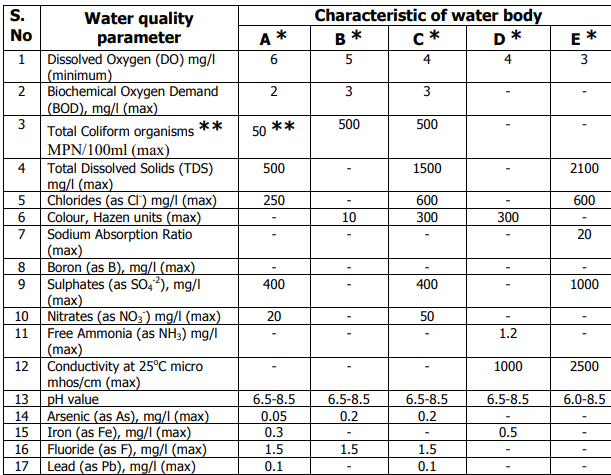

Mission River
Mission River
Home
Base values for the classes of the river.

Select the class of the river.
Select the class
Class A
Class B
Class C
Class D
Class E
Welcom to Result viewing
This is the result page of your river.
Description
.
Classification
.
Solutions to improve the water quality
Uses of the water
Check here More Details about this ... !!